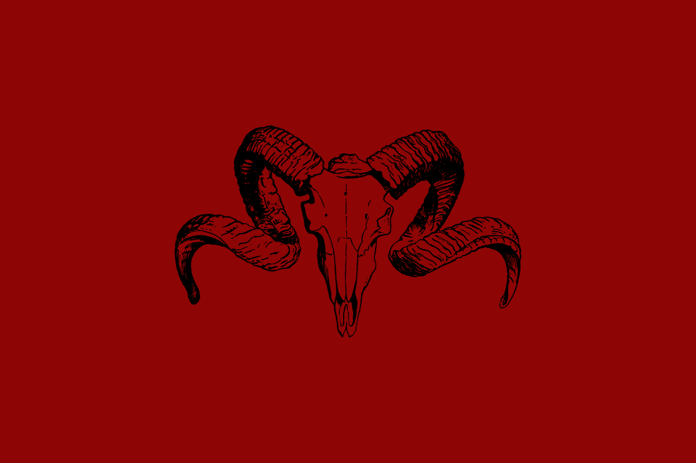

@rotting_sweet

Yggdrasil


Dùath est une Terre bien moins accueillante que Alfheim. Ses rivages profonds bordés de falaises, ses montagnes, ses volcans…
Le tout donne une atmosphère rude et morne.
L'alternance de ses saisons n'améliorent pas cette allure : La saison des orages et éruptions volcaniques précède une saison des pluies diluviennes, qui ne prendra fin qu'une fois que les températures auront suffisamment chuté pour démarrer la saison des neiges.
Seulement après ça, la quatrième et dernière saison du cycle pourra débuter : la saison du temps serein ; qui apporte un moment de paix et de répit, et où les cultures pourront pousser suffisamment pour composer les réserves de l'année suivante.
La population qui réside sur ces terres sont appelés les Naeths.
Ils sont décrits comme des possesseurs de sang "impur": cela comprend les Démons, les Sirènes, les Bêtes de l'ombre, les Golems, les Géants, Les Dragonborns, les Halflins, ainsi que les Goblins.
Leur société, bien que plus égalitaire que celle d'Alfheim, possède tout de même une hiérarchisation des espèces, où les Démons sont les plus hauts placés : leur dirigeant, un empereur, se nomme Demophos Kahar.
C'est un prince démon avec un sens pointu de la justice, ou plutôt de sa justice, ne supportant pas que quelqu'un transgresse ses règles et ses lois.
Dùath n'est ni une société matriarcale, ni une société patriarcale.
Également, la dynastie ne se crée pas de façon héréditaire, ce qui signifie que Demophos Kahar nommera une personne de son choix qui prendra sa suite une fois l'empereur actuel décédé.

La population parle une langue qui leur est propre : la langue Infernale.
Le mélange de culture entre les différents pays étant extrêmement mal vu, et plus spécialement encore entre les Naeths et les Ithils, les habitants de Alfheim, aucune autre créature qu'un natif de Dùath ne peut parler ou même étudier cette langue.
D'autres langages résident néanmoins sur Dùath.
Le langage aquatique, par exemple, parlé exclusivement par les Sirènes, donne l'impression à toute personne qui l'écouterait de n'être qu'un chant doux et enivrant.
Le langage sombre quant à lui est parlé par les Bêtes de l'ombre, et s'apparente à un son continu, extrêmement grave dans ses tonalités, sans aucune variation.
Les croyances des habitants de Dùath peuvent se classer en deux grandes religions :
La première est dirigée par deux Dieux ennemis : le Dieu des Ténèbres, Mynas, et le Dieu des Cieux, Rachar.
Ils veillent sur tous, gardant leur attention sur Yggdrasil en permanence.
Ils sont interprétés comme étant les deux étoiles tournant autour d'Yggdrasil : Mynas est la plus petite des deux, l'étoile jaune,
et Rachar est la plus grande, l'étoile rouge.
Rachar est la lumière pour les vivants : elle veut leur bonheur, leur épanouissement, les accompagner à travers les étapes difficiles
pour leur permettre de voir joie, amour et paix.
Mynas n'est que chaos. Il sème la peur, la douleur, la haine. Les Naeths croyant en cette religion pensent que tous les 89 ans, Mynas célèbre son
existence en déclenchant, directement ou indirectement, un grand malheur sur Yggdrasil.
D'après eux, la prochaine catastrophe devrait arriver en l'an 356.
La seconde religion est gouvernée par un Dragon Géant, appelé Achyx. Selon ces croyances, Yggdrasil est l'œuf de ce Dragon, qui, un beau jour, éclora.
Cela signera la fin du monde tel qu'on le connaît, mais créera la vie la plus parfaite qu'il puisse exister.
Achyx n'est pourtant pas un guide pour les croyants.
Il ne dicte les action de personne, ne conseille personne, ne punit personne.
Cependant, même si Achyx est distant des évènements sur Yggdrasil, il existe tout de même un grand danger.
En effet, l'éclosion de l'œuf n'est pas assurée : si le mal se répand de trop via les actions des vivants, Achyx n'aura d'autre choix que de manger son œuf,
empêchant ainsi que le bébé Dragon naisse pourri, nécrosé par la haine et la violence que les Yggdrasiliens auraient alimenté.